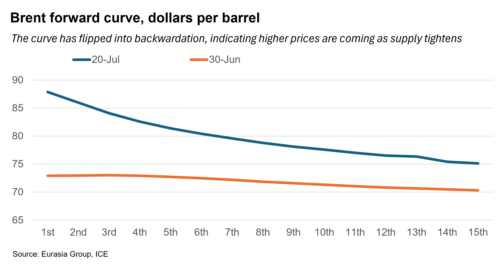
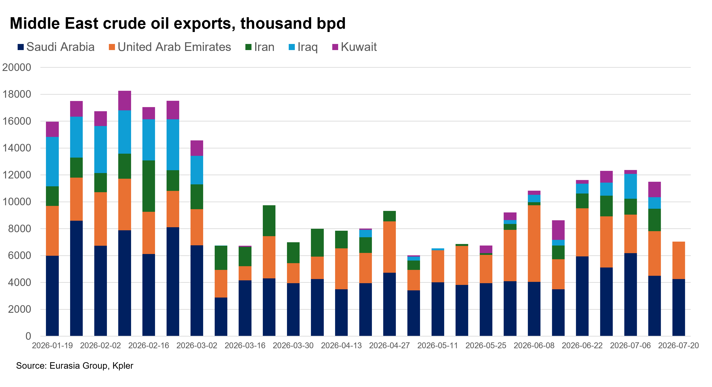

|
 |
|||
|
||||
|
||
Geopolitics and a tightening market will move prices up. The Brent per barrel price has risen more than 10% in the last week and is trading in the high $80s/low $90s. Ongoing Iranian efforts to keep the Strait of Hormuz closed to traffic, threatened action by the Houthis in Yemen against Saudi Arabia (that could disrupt oil traffic through the Red Sea), and attacks by Ukraine on Russian refineries and tanker will contribute to a market characterized by heightened geopolitical risk and mounting physical tightness. Prices are likely to rise further into the $90s for Brent; potentially higher, if the US or Iran escalate their confrontation (see: Escalation likely as Iran sees path to Hormuz control, 15 July 2026). Forward curve now suggests a tighter market. During the 21-day peace following the US-Iran deal in late June, oil markets were flooded with supply, which pulled prices down and moved the forward curve into a state of contango (a market dynamic where futures prices were higher than spot prices, a sign of a well-supplied market). The closing of Hormuz, again, has caused the curve to flip once more. The curve is now in a state of backwardation (where futures prices are lower than spot prices, a sign of a tightening market). This is likely to continue, moving prices into a higher band of $90-$110 by mid-August. This increase is likely unless the US and Iran de-escalate in a way that allows traffic to resume.  Iran will not back down in the strait. While Iran has yet to significantly escalate its conflict with the US—it continues to retaliate against US attacks by targeting US bases in Jordan, Bahrain, and Kuwait, but has not yet targeted regional energy infrastructure in a significant way—it is unlikely to relax its grip on Hormuz. In the meantime, attacks on tankers and other ships attempting to cross without Iranian permission will continue. This will keep strait traffic at a depressed level (5%-15% of prewar flows and less than 10% in the event the conflict escalates). Flows out of the Middle East are trending down as a result of the strait's closure.
 Houthi escalation against Saudi Arabia is likely, putting additional pressure on oil prices. Iran’s main means of escalating the conflict is to push its Yemeni ally to close the Red Sea to oil traffic—a move which would put considerable additional pressure on oil prices, amid disrupted flows from the Saudi port of Yanbu (3.5-4.5 million barrels per day). A Houthi declaration of a “maritime blockade” of Saudi Arabia on 20 July suggests the group is likely to escalate against Riyadh. A concerted effort to close the Red Sea to Saudi oil shipping would require significant action, however, and would trigger major retaliation from Riyadh. The Houthis remain focused on squeezing Saudi Arabia for more money and may limit action in the Red Sea as a result (see: Airport strike raises risk of Houthi actions targeting Saudi energy, 13 July 2026); their announcement of a blockade did not mention the Red Sea, Bab al Mandeb, or Iran. Ukrainian attacks on Russia will affect crude flows out of Black Sea and add to higher prices. Contributing to higher prices are the ongoing efforts by Ukraine to disrupt Russian energy production and exports. Attacks on refineries remain ongoing, while more recent Ukrainian efforts have focused on Russia’s coastal energy trade in the Black Sea. One attack prompted the temporary closure of the Caspian Pipeline Consortium (CPC) pipeline, which handles roughly 2% of global oil, including virtually all of Kazakhstan's 1.5 million bpd in exports. While the closure is likely to be brief, the likelihood of continued Ukrainian attacks means flows of energy out of the Black Sea are likely to be periodically disrupted, adding to supply-side factors keeping prices higher. |